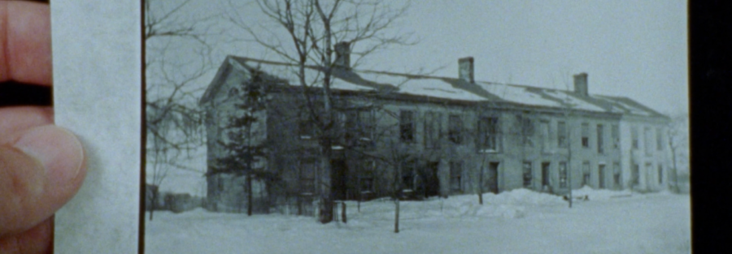

“Real shape of the earth”: Short Films with Ben Balcom
RSVP
Join us for a program that spotlights the work of Milwaukee-based filmmaker Ben Balcom whose films turn a lens to progressive social projects of the past with a playful visual language adept in analogue techniques of experimental cinema. Across these films, rural landscapes, cities, poems, and letters combine to cast the “real shape” of places and histories into possible futures.
Included in the program is Balcom’s newest film, THE PHALANX (2025), which traces the everyday lives and utopian aspirations of participants in the Ceresco community, a vibrant yet short-lived socialist settlement in mid-19th-century Wisconsin.
To accompany Balcom’s work, this program incorporates two short films that employ kindred gestures to explore time and place: Rhea Storr’s OKAY KESKIDEE! LET ME SEE INSIDE, an account of Black community spaces in the UK lost to gentrification, and a late 70s gem, VISIBLE INVENTORY SIX: MOTEL DISSOLVE by American multimedia artist and educator Janis Crystal Lipzin.
Screening followed by a conversation with the filmmaker.
Works screened:
Empty heading
NEWS FROM NOWHERE (Ben Balcom, 2020, 8 min, 16mm-to-digital)